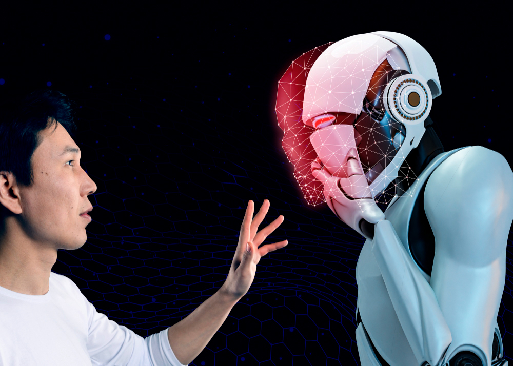

Inteligencia Artificial
La inteligencia artificial (IA) es una rama de la informática que busca desarrollar sistemas capaces de realizar tareas que requieren inteligencia humana. Estas tareas incluyen aprendizaje, razonamiento, percepción y toma de decisiones.
¿Qué es la Inteligencia Artificial?
La IA se divide en dos categorías principales: IA débil y IA fuerte. La IA débil se centra en realizar una tarea específica utilizando algoritmos diseñados para ese propósito, mientras que la IA fuerte aspira a replicar la inteligencia humana en todas sus formas.
Aplicaciones de la Inteligencia Artificial
- Procesamiento de Lenguaje Natural: IA utilizada para interpretar y generar lenguaje humano, como asistentes virtuales y traducción automática.
- Visión por Computador: IA que permite a las computadoras interpretar y procesar imágenes, útil en reconocimiento facial y vehículos autónomos.
- Aprendizaje Automático: IA que permite a las máquinas aprender de los datos y mejorar con el tiempo sin programación explícita.
- Robótica: Integración de IA en robots para realizar tareas complejas y peligrosas.
El Futuro de la IA
La IA está avanzando rápidamente y se espera que tenga un impacto significativo en todos los aspectos de la vida. Desde la medicina hasta la educación y la industria, la IA promete transformar la forma en que vivimos y trabajamos.
